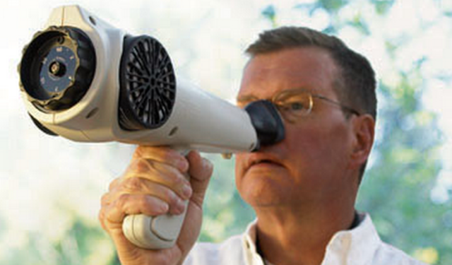

The Future
Ever wonder what the future will be like on Earth? Will there be flying cars and robots that live asynchronously with humans? How about spaceships that visit the neighboring galaxy's planets like taking a trip to the mall? All these questions might seem like it will take a few milleniums to answer. However, for one lucky or perhaps unlucky pizza delivery boy name Fry, the answers are not quite that distant. I would like to introduce you to a favorite tv series of mine called Futurama.
Storyline
Phillip Fry is a 25-year-old pizza delivery boy whose life is going nowhere. When he accidentally freezes himself on December 31, 1999, he wakes up 1,000 years in the future and has a chance to make a fresh start. He goes to work for the Planet Express Corporation, a futuristic delivery service that transports packages to all five quadrants of the universe. His companions include the delivery ship's captain, Leela, a beautiful one-eyed female alien who kicks some serious butt, and Bender, a robot with very human flaws. Written by Ronos
Taken from IMDb
From Cartoon to Real Life
Not all technology in Futurama are exaggeratedly fictitious. In Futurama, the professor Farnsworth invented a machine that allows him to smell as far into the universe as a telescope can see. This invention is called the smell-o-scope.

Check out the Nasal Ranger! The Nasal Ranger is a portable odor detecting and measuring instrument that can quantify odor strength in ambient air, according to device developers St. Croix Sensory. The stink-measuring device, and its developers in Stillwater, Minn. -- which also hold odor training classes for individuals interested in becoming master sniffers -- were featured on the History Channel's Modern Marvels "Stink" episode exploring smelly science.